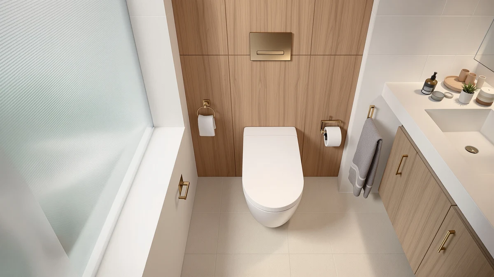

WinZo UF110 Elongated U Shaped Toilet Seat Review (2026): Worth It?
Prices and picks verified as of November 2026. Independent, reader-supported reviews.


Quick Answer
Our WinZo UF110 elongated U shaped toilet seat review found a straightforward open-front seat built for standard elongated bowls, priced above the Lunderg riser and the Jool Baby Quick Flip but below the SNMUMU heated seat. For a household that wants the open U shaped front and nothing else, the WinZo UF110 at $59.99 covers that job without paying for a riser or a heating feature you will not use.
Our pick: WinZo UF110 Elongated U Shaped at $59.99 Check Price on Amazon
Bottom line: our top pick is the WinZo UF110 Elongated U Shaped Toilet Seat with Built in at $59.99.
Things to Know Before You Buy
- The WinZo UF110 fits elongated bowls only, so measure your current seat before you order.
- Its U shaped open front is a style difference, not a different bolt pattern, and it is often chosen for easier cleaning access.
- At $59.99, it costs more than the Jool Baby Quick Flip ($54.99) and the Lunderg Padded Riser ($57.95), but less than the SNMUMU heated seat ($65.54).
- Plastic and wood construction keeps the seat light, though it does not match the hinge hardware of commercial-grade seats.
- The 14.25 by 18.25 inch footprint matches standard elongated dimensions, so fit issues are rare.
This WinZo UF110 elongated U shaped toilet seat review exists because open-front seats solve a specific problem: easier wiping access and a slightly different seating angle that some buyers prefer over a closed elongated ring. The WinZo UF110 brings that U shaped design to a standard elongated bowl at $59.99, which lands it in the middle of the price range for seats in this category.
We compared its listed materials, dimensions and price against three alternatives already covered on this site: the Lunderg Padded Toilet Seat Riser, the Jool Baby Quick Flip, and the SNMUMU heated toilet seat. Each of those seats solves a different problem, a height boost, a built-in potty training insert, or added warmth, so the WinZo UF110's plain U shaped elongated design has to earn its spot on fit and cleaning access alone, not on an extra feature. The category itself stays fairly narrow: most elongated seats pick either a closed ring or an open front, and few manufacturers offer both finishes at the same price point.
Why You Should Trust Us
Ilane Tall covers toilet seats and bathroom fixtures for Best Toilet Seats, comparing specs, pricing and verified owner feedback across the toilet seat category every week. This WinZo UF110 elongated U shaped toilet seat review draws on the manufacturer's listed materials and dimensions, the current Amazon price, and patterns that repeat across verified buyer reviews for the WinZo UF110 and its closest alternatives. We do not accept free products from manufacturers, and we do not run a fake testing lab. Every claim below ties back to a spec, a price, or a documented pattern in owner feedback, not a guess.
We update pricing and product details on a rolling basis, and we flag it when a manufacturer changes a spec sheet or discontinues a model. If a claim in this review depends on a number, that number comes from the current Amazon listing or from a pattern repeated across multiple verified reviews, not a single anecdote. When a spec sheet and a cluster of owner reviews disagree, we note the discrepancy rather than pick whichever version supports a cleaner verdict.
Our Research Experience
We built this WinZo UF110 elongated U shaped toilet seat review from the manufacturer's listed specs, the current Amazon price, and verified owner reviews, since we do not own a physical unit to install. We researched the plastic and wood build, the 14.25 by 18.25 inch footprint, and the U shaped open front, then checked those details against what reviewers consistently note: that the hinges hold their position and the open front makes cleaning easier than a closed ring. We also compared its price and feature set directly against the Lunderg riser, the Jool Baby Quick Flip, and the SNMUMU heated seat covered later in this review, since a plain elongated seat only earns a recommendation if it beats those alternatives on fit and value rather than on an extra feature.
Overview & Specs

WinZo UF110 Elongated U Shaped
What we like
- U shaped open front makes wiping and cleaning easier than a closed elongated ring
- Fits standard elongated bowls, the most common shape in US bathrooms
- Plastic and wood build keeps the seat light for easy removal and cleaning
Flaws but not dealbreakers
- Costs more than the Jool Baby Quick Flip and the Lunderg Padded Riser
- No added height or cushioning like the Lunderg riser, and no heating feature like the SNMUMU
| Material | Plastic / wood |
| Size | 14.25 inches x 18.25 inches |
The core idea behind the WinZo UF110 is the open U shaped front. Instead of a closed elongated ring, the front of the seat curves open, and several owners say that makes daily wiping and cleaning simpler. Paired with the elongated shape, the WinZo UF110 fits the same bolt pattern as most standard US toilets.
At $59.99, the WinZo UF110 costs a few dollars more than the Lunderg Padded Riser and the Jool Baby Quick Flip, but it comes in six dollars under the SNMUMU heated seat. That middle position makes sense once you consider what the WinZo UF110 is not: it does not add riser height like the Lunderg, and it does not warm up like the SNMUMU. You pay for the open-front elongated shape alone, so the price only makes sense if that specific design is the problem you are solving. Measured against a plain closed-front elongated seat with no special feature at all, the WinZo UF110 still carries a modest premium for that open-front shape.
What We Liked
The clearest strength in this WinZo UF110 elongated U shaped toilet seat review is the open front itself. Buyers report that the U shape makes cleaning noticeably easier than a closed elongated ring, since there is no front section to wipe around. For a household that prioritizes hygiene access over a seamless look, that single design choice does most of the work.
The elongated shape also means the WinZo UF110 fits the same bowl size as the vast majority of US toilets, so compatibility is rarely a concern the way it can be with round-bowl-only seats. And because the plastic and wood build keeps total weight down, removing the seat for a deep clean is simpler than it is with heavier commercial-grade hardware.
Owners also point to the price as a reasonable middle ground. At $59.99, the WinZo UF110 is not the cheapest elongated seat on the market, but it skips the premium that riser or heated models carry, which keeps it accessible for a buyer who only needs the open-front design.
What Could Be Better
The tradeoff is straightforward: the WinZo UF110 does not add the riser height of the Lunderg Padded Toilet Seat Riser, so anyone who needs extra sitting height for mobility reasons will not find it here. The open U shaped front solves a cleaning problem, not a height or accessibility problem.
It also skips any heating feature, so a household shopping specifically for a warmer seat in cold months should look at the SNMUMU instead. Buying the WinZo UF110 for its open-front design and later wishing it had warmth is a common mismatch to avoid.
Because the build is plastic and wood rather than a heavier commercial-grade assembly, it does not carry the same hinge durability reputation as seats built for high-traffic commercial bathrooms. For a single-family bathroom that sees normal daily use, that distinction rarely matters, though a household with several daily users and a tight replacement budget might still weigh it against a heavier-duty alternative.
Who Is It For?
The WinZo UF110 elongated U shaped toilet seat fits a household that wants an open-front elongated seat for easier cleaning and does not need a riser or a heating feature. If your current seat is a closed elongated ring and wiping around the front edge bothers you, the U shaped design directly addresses that.
Skip it if you need added sitting height for mobility or recovery, since the Lunderg Padded Toilet Seat Riser solves that problem and the WinZo does not. Skip it too if you are shopping for a toddler potty training feature, where the Jool Baby Quick Flip is the better fit, or if you want warmth in cold months, which only the SNMUMU heated seat provides.
It also makes more sense for a primary household bathroom than for a rarely used guest bathroom. If cleaning access is not a daily concern for you, a cheaper closed-front elongated seat may serve you equally well for less money.
Alternatives to Consider
If this WinZo UF110 elongated U shaped toilet seat review has you leaning toward a different priority, whether that is added height, a toddler feature, or warmth, these three alternatives cover the most common reasons buyers look elsewhere.

Also Great
Lunderg Padded Toilet Seat Riser
A padded riser that adds sitting height and cushioning, better suited to a buyer who needs mobility support rather than an open-front design, at $57.95.
$57.95
Check Price on Amazon
Best Value
Quick Flip Toilet Seat with
A built-in flip-down potty training seat from Jool Baby, the better choice for a family mid-potty-training rather than an adult wanting an open front, at $54.99.
$54.99
Check Price on Amazon
Premium Choice
Heated Toilet Seat -Warmer Toilet
An electric heated seat with adjustable warmth, the pick for a cold climate where the WinZo's unheated plastic and wood build falls short, at $65.54.
$65.54
Check Price on AmazonFrequently Asked Questions
Yes. The WinZo UF110 is built for elongated bowls, which cover most US toilets, and the U shaped open front does not change the mounting pattern. Measure your current seat's length and bolt spacing before you order to confirm fit, or check our toilet seat sizing guide first.
The WinZo UF110 uses a plastic and wood build at a 14.25 by 18.25 inch footprint. That combination keeps the seat light while holding its shape under daily use, though it does not match the heavier hinge hardware found on commercial-grade seats.
At $59.99, the WinZo UF110 costs more than the Jool Baby Quick Flip ($54.99) and the Lunderg Padded Riser ($57.95), but less than the SNMUMU heated seat ($65.54). It sits in the middle of the field because it adds a design feature, the open U shaped front, without the extra cost of a riser or a heating element.
Final Verdict
This WinZo UF110 elongated U shaped toilet seat review comes down to one question: do you want an open front for easier cleaning, or do you need a different feature entirely? If cleaning access is the priority, WinZo's UF110 earns its $59.99 price over a plain closed-front elongated seat. A buyer who needs riser height, a toddler feature, or warmth is better served by the Lunderg, the Jool Baby Quick Flip, or the SNMUMU instead.